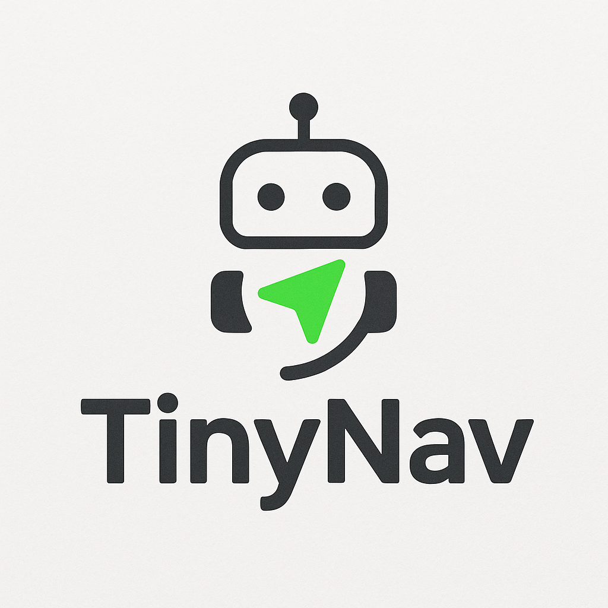
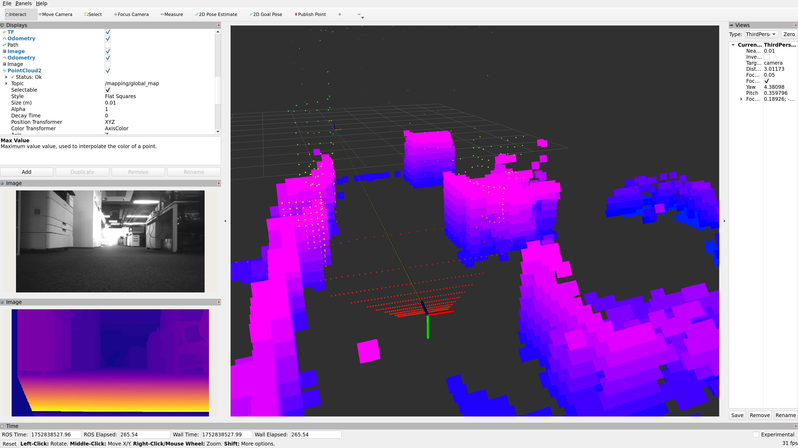
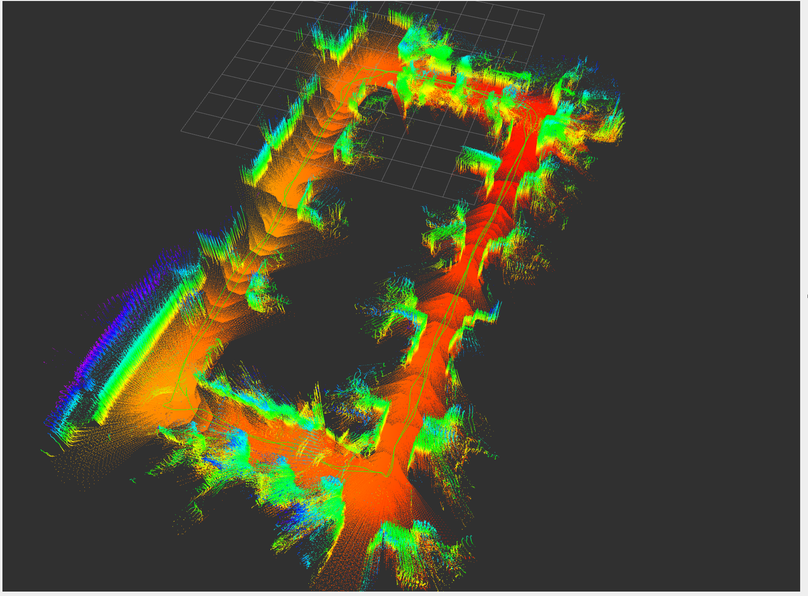

Perception
Stereo odometry, depth, IMU fusion, TensorRT feature matching, and dense local geometry for closed-loop control.

TinyNavStereo SLAM · Mapping · Planning · Control
A lightweight, hackable system to guide robots through real spaces with GPU-accelerated perception and map-based navigation.

Runtime Stack
Stereo odometry, depth, IMU fusion, TensorRT feature matching, and dense local geometry for closed-loop control.
Keyframe maps, loop closure, pose graph optimization, DINO scene retrieval, and persistent map storage.
Occupancy grids, ESDF maps, trajectory library scoring, and practical command generation for mobile robots.
Runs on desktop GPUs and Jetson-class devices, with examples for Unitree GO2, LeKiwi, RealSense, and Looper.
Map Workflow
TinyNav records keyframes, descriptors, poses, occupancy, and depth products into a reusable map database. The same map can support localization, planning, visualization, and retrieval workflows.


Sensors
Looper and RealSense workflows are first-class paths in the repository, with scripts for live sensors, rosbag replay, mapping, and navigation.
Quickstart
git clone https://github.com/UniflexAI/tinynav.git
cd tinynav
bash scripts/check_env.sh
bash scripts/run_rosbag_examples.sh